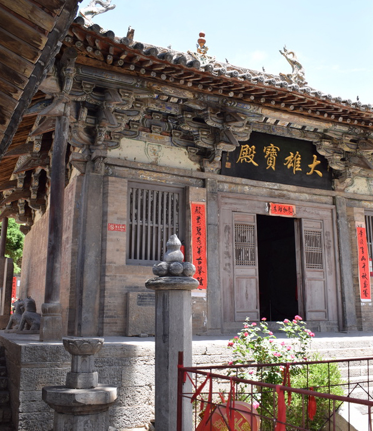

Architectura Sinica
Currently in active development, Architectura Sinica is designed to be a be a public, browser-based research portal for the study of China's traditional architecture.
When complete the site will consist of four parts, each intended to support further research, and to be enriched by the contributions of others:
- A Dynamic Site Archive of historic monuments, both larger sites and individual structures, searchable by name of site (ancient and modern) and by technical terminology used to describe individual elements of single buildings. Search terms will be in Chinese, pinyin Romanization of modern Mandarin, and English translation. The archive will be fully integrated with a mapping tool that will allow search results to be located on a map of modern China using public-domain base maps. This will be linked to the photo archive to facilitate viewing of search results through the map interface. Map output will be available in digital and analog forms for peer-reviewed publication.
- A encyclopedic dictionary and thesaurus of technical terminology used to describe Traditional Chinese Architecture. Most entries are the product of the ATTCAT (The Annotation and Translation of Traditional Chinese Architectural Terminology) Project, an international team of students and scholars who meet annually to research individual terms related to Traditional Chinese Architecture and collate previous translations. ATTCAT workshops are led by Chen Wei 陳薇, Zhuge Jing 諸葛净, Zuo Lala 左拉拉, and Tracy Miller 梅晨曦, and are generously sponsored by Southeast University School of Architecture in Nanjing 南京東南大學建築學院 and, since 2021, NYU Shanghai. For a full list of individual participants, please follow links for the appropriate year: 2018; 2019; 2021; 2022; 2023; 2024. Beginning in the Spring of 2021, entries were also created by the Chinese Monuments Workshop, a collaboration of faculty, masters students, and undergraduates at NYU Shanghai, Southeast University, and Vanderbilt University. More on the 2021 workshop can be found following this link.
- A bibliography of sources on Traditional Chinese Architecture. The focus of this bibliography will be sources used in individual entries, but additional sources on the history and development of the architectural tradition of China will also be included. Contributions to this bibliography are welcome! If you would like to contribute a source, please contact Tracy Miller.
- Photographs and transcriptions of epigraphic information found at a given site. When complete, titles and authors of stele inscriptions will be searchable using traditional Chinese characters.